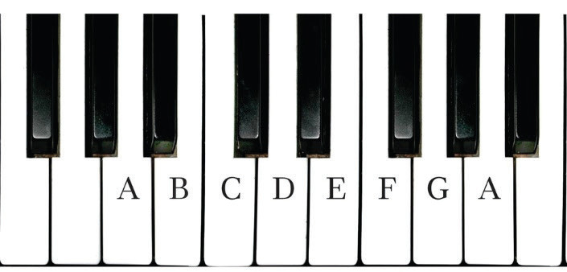
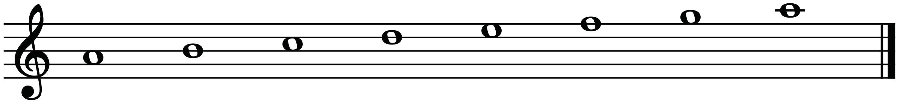
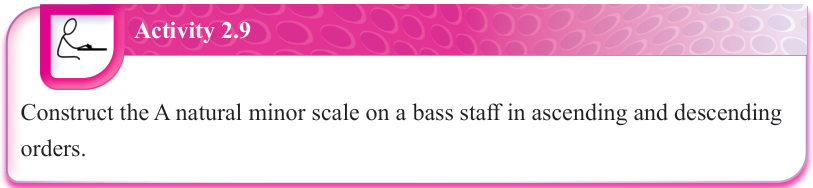

TSTTSTT
Figure 2.36: The ‘A’ natural minor scale on a piano

TSTTSTT
Figure 2.37: The ‘A’ natural minor scale on a staff

Activity 2.9
Construct the A natural minor scale on a bass staff in ascending and descending orders.
The D natural minor scale
You can arrange a series of eight notes starting from the first note, which is D, when constructing the D natural minor scale.
This can be done while following the pattern for constructing natural minor scales, which is T-S-T-T-S-T-T.
The following are steps that can be followed when constructing the D natural minor scale:
(a)
Step 1: Write a series of eight notes from note D.D-E-F-G-A-B-C-D
(b)
Step 2: Count the steps between the notes in the pattern T-S-T-T-S-T-T as follows:
(i)From note D to E = Tone (T)
(ii)From note E to F = Semitone (S)